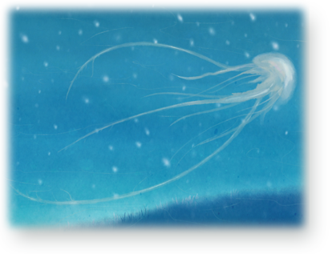

<!DOCTYPE html PUBLIC "-//W3C//DTD XHTML 1.0 Transitional//EN" "http://www.w3.org/TR/xhtml1/DTD/xhtml1-transitional.dtd">
<html xmlns="http://www.w3.org/1999/xhtml">
<head>
<meta http-equiv="Content-Type" content="text/html; charset=utf-8" />
<title>Monster</title>
<link rel="stylesheet" href="common.css" />
</head>

<body>
<div height="150px">
	<table width="100%">
	<tr><td align="left">
	<p class="menu"><span style="font-size:18px">Monster</span></p>
	</td><td align="right">
	<p class="menu"><span style="font-size:12px; vertical-align:bottom">TOP > ABOUT > CHARACTER > MONSTER</span></p>
	</td></tr>
	</table>

	<hr class="faded" />
	<br />

	<div class="content" style="font-size:16px">
		<font face="Adobe 仿宋 Std R">
			<p>奧羅<br /><br />
				原始型態為絲狀，會奪取其他生物的軀體，被奪取軀體者身體將裂為數塊。奪取軀體後的奧羅以屍塊為核，形似水母，以漂浮方式移動。<br />
				<p>
                
				</p>
			</p>
		</font>
	</div>
</div>
</body>
</html>
